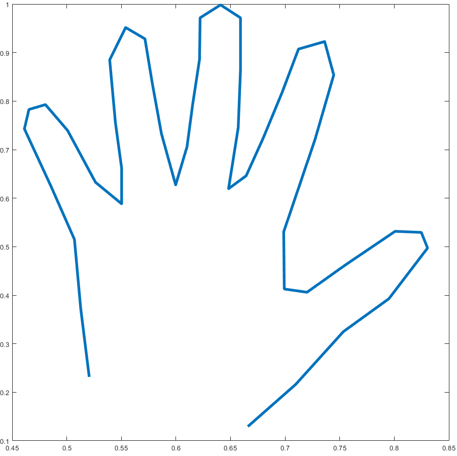
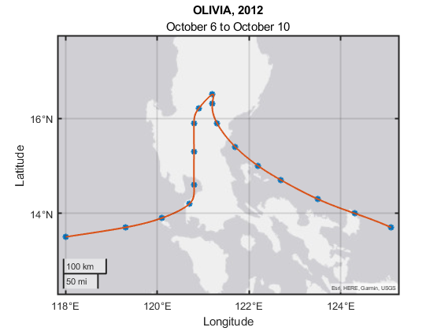
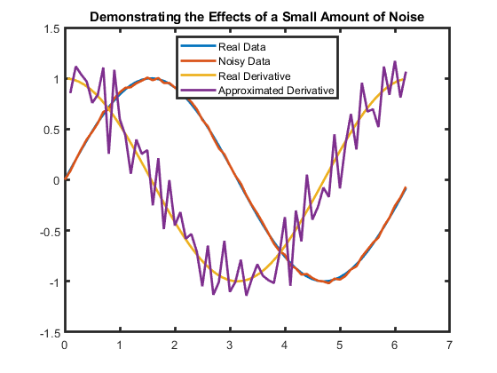
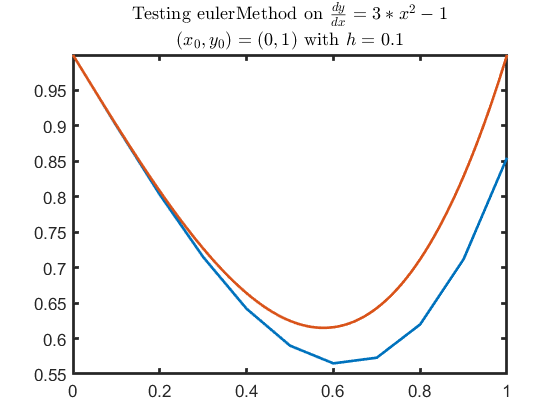
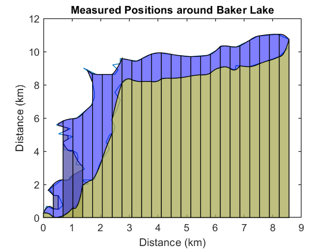
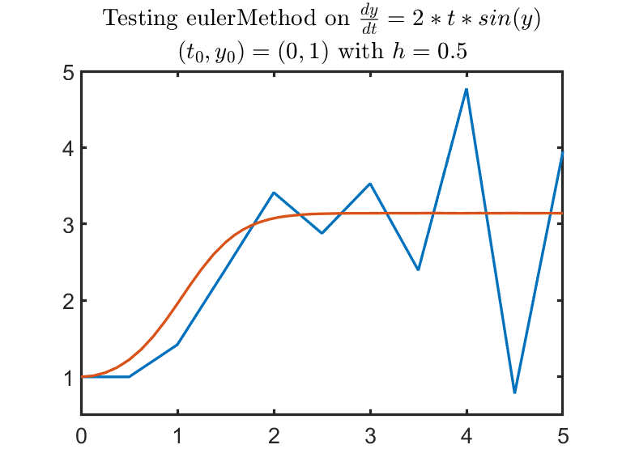
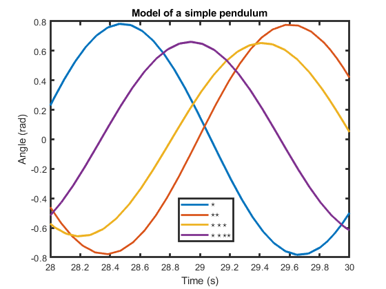

Numerical Methods with Applications
Information
This curriculum module contains interactive
MATLAB® live scripts
and scaffolded programming labs that teach basic concepts from numerical methods.
Numerical Methods with Applications covers
interpolation by splines, finite difference approximations of
derivatives, numerical integration, and
numerical methods for solving ordinary differential equations
and partial differential equations. Applications
include tracking cyclones using interpolation,
computing the area of a lake before and after a dam
was built, and modeling a pendulum.
You can use these live scripts as demonstrations in a lecture, class activities,
or interactive assignments outside of class. The module is divided into
five folders organized by topic: Interpolation, Derivatives, Integrals,
ODEs, and PDEs.
The instructions inside the live scripts will guide you through the exercises and activities.
Get started with each live script by running it one section at a time. To stop running the script
or a section midway (for example, when an animation is in progress), use the Stop button in the
RUN section of the Live Editor tab in the MATLAB Toolstrip.
If you find an issue or have a suggestion, email the MathWorks online teaching team at
onlineteaching@mathworks.com.
Prerequisites
These scripts assume familiarity with MATLAB at the level covered in
MATLAB
Onramp and the level of programming knowledge covered in the
Fundamentals of Programming interactive examples. They also require
knowledge of single variable calculus. The partial differential equations
discussion assumes familiarity with partial derivatives.
Getting Started
 Add-Ons > Get Add-Ons.
Add-Ons > Get Add-Ons.
Products
MATLAB® and Symbolic Math Toolbox™ are used throughout. Tools from the Statistics and
Machine Learning Toolbox™ and the Curve Fitting Toolbox™ are used to motivate the
interpolation discussion. The Automated Driving Toolbox™ is used to help animate the
tracks of cyclones. Tools in the Partial Differential Equation
Toolbox™ are referenced in the Further Discussion at the end of the
PDEs script.
Modules
Topic
Interactive Examples
Applications
Learning Goals
Interpolation
interpolation.mlx

trackStorms.mlx

Approximating Derivatives
approximatingDerivatives.mlx

Derivative approximations are used to numerically solve ODEs and PDEs.
Approximating Integrals
numericalIntegration.mlx

measureLake.mlx

Solving Ordinary Differential Equations
diffEqs.mlx

pendulum.mlx

Solving Partial Differential Equations
partialDiffEqs.mlx

Linked examples present solutions to heat distribution problems,
traveling waves, and stress/strain.
Copyright 2022 The MathWorks™, Inc.